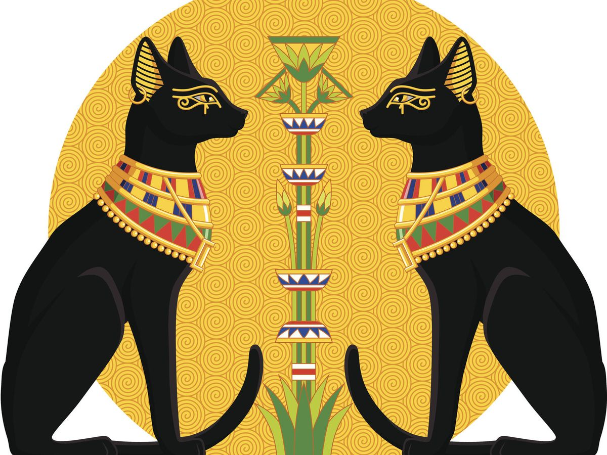
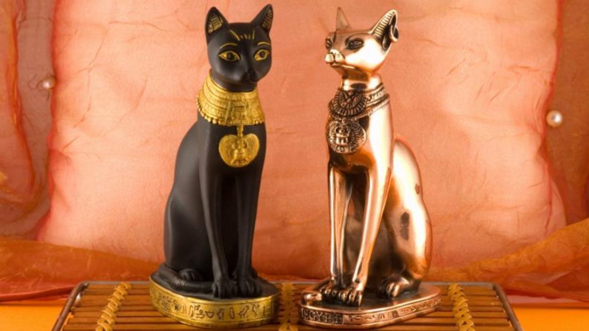

Cute cat facts
Especie más rara
Egipcios y gatos
Templo Gotokuji
Adopta
Creian que estos tenian
fertilidad,rapidez y gracia.
Los dioses tenian rasgos
felinos.
Pero no los adoraban como divinos.
divinos.
 